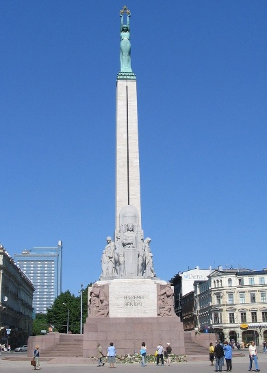
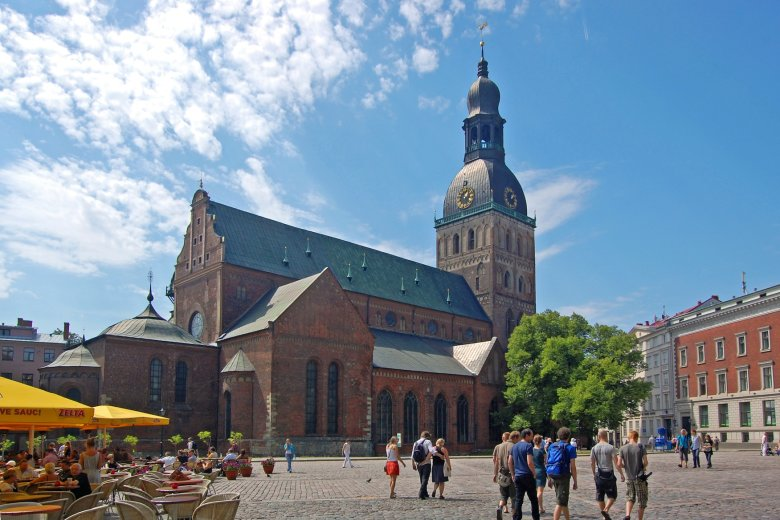
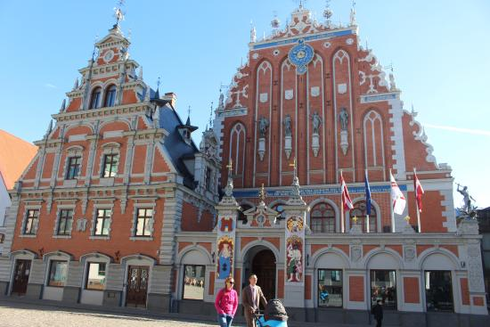
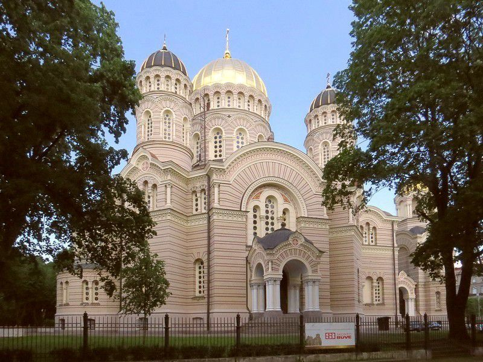

Достопримечательности
Перечислять и говорить о достопримечательностях Латвии можно бесконечно - наша страна действительно богата очень интересной архитектурой, народными традициями, уникальными символами и самобытной культурой.
Даже если вы никогда не были в Латвии, то наверняка слышали рассказы, читали отзывы и видели фото интересных мест.
Но поверьте, обязательно стоит увидеть все это в живую.
ТОП МЕСТА В РИГЕ
|
Памятник Свободы

Уже 75 лет в самом центре Риги возвышается памятник Свободы. Этот выполненный из гранита и бронзы монумент символизирует стремление латышского народа к независимости и свободе.
В руках женской фигуры, символизирующей Латвию, сверкают три звезды по числу культурно-исторических регионов государства – Курземе, Видземе и Латгале.
На обелиске высечена надпись "Отчизне и свободе". Памятник был воздвигнут на народные пожертвования и открыт 18 ноября 1935 года.
Домская площадь

Домская площадь – самая большая площадь в Старой Риге и сердце исторической части города.
Сюда, как по кровеносным сосудам, стекается жизнь с близлежащих улочек.
Площадь хранит воспоминания о важнейших событиях истории страны за последние 20 лет, а в центре ее отмечена точка, с которой видны все три позолоченных петушка рижских церквей.
Будто сторожевые башни, обрамляют Домскую площадь несколько выдающихся памятников архитектуры XIX и XX столетий.
Ратушная площадь

Ратушная площадь была вновь отстроена, потому что в годы Второй мировой войны она и ближайшие окрестности были полностью разрушены.
Сегодня самым красивым строением на Ратушной площади является восстановленный Дом Черноголовых, а также расположенная напротив городская Ратуша.
Именно на этой площади 500 лет назад была зажжена первая рождественская елка – теперь на этом месте находится памятная табличка, а каждый год на праздник вновь устанавливается нарядная елка.
Рижский кафедральный собор Рождества Христова

В центре Риги, на Эспланаде, возвышается величественное здание – Рижский кафедральный собор Рождества Христова.
Это крупнейший православный храм Риги. В советское время здесь был планетарий и ресторан, но после восстановления независимости собор был отреставрирован, и теперь здесь снова собираются верующие.
|